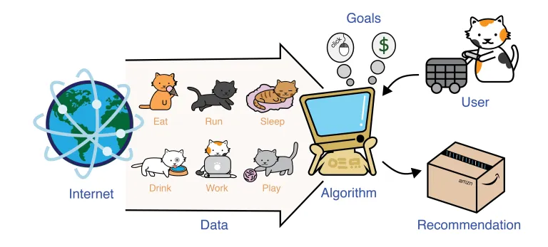

Topic Modelling and Text Classification Machine Learning Solution
Rijul_Sahu
July, 2019
Processes where a machine learning solution needs to be implemented on large datasets for predictive or descriptive analytics.

Description
The client wanted to perform topic modelling and text classification on data generated from customer chats.
Customer’s chat data is auto-classified into specific topics. Once the topics are identified by an algorithm, it should automatically assign topics to each individual chat from a new dataset.
Topic modelling and text classification on huge amounts of customer chats data requires complex algorithms with high execution speed.
Challenges
The key challenges faced in this process were:
- Difficulty in extracting actionable insights from large volume of unstructured text data.
- Difficulty in executing the classification algorithm on large datasets using traditional systems and methods.
- Increase in data processing time because of slow RAM and less server space.
Solution
With the aim of building a scalable and an optimized solution with less human intervention, I designed and developed topic modelling and classification script on big data supported platform using PySpark framework.
Which executes topic modelling and classification algorithm along with text pre-processing within seconds, as the platform supports distributed processing system.
Script processes the chat data from the raw data file, cleans chats, and formats the data. After cleansing the text, it applies the topic modelling algorithm and identifies the topics as per the text data;
also, the script runs a classification algorithm on the unseen chats to predict / bucket the chats on specific topics / buckets which customer is talking about.
The team’s collaborative efforts in designing and implementation lead to achieve an accuracy of more than 85%.
Benefits
The key benefits of implementing this solution are:
- Reduced data processing time to ~3 minutes.
- Mined for topics and identified focus areas, resolutions, sentiment, etc. in lesser processing time.
- Removed manual intervention up to 98% – error-free delivery.
- Reduced load on server – now running on distributed mode.
- Optimized process and reduced cost.